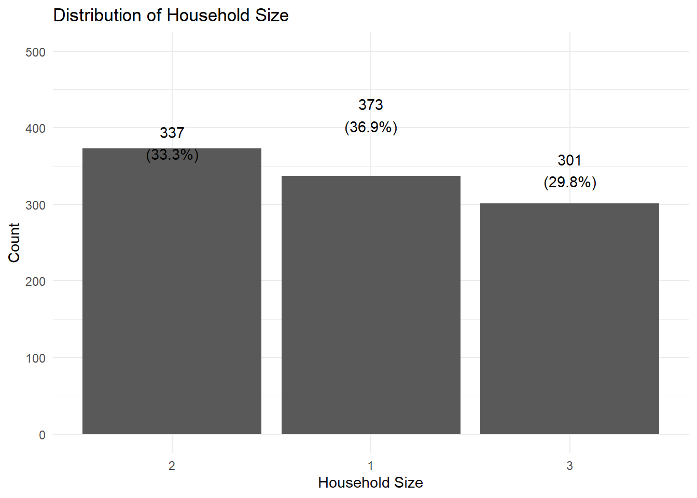
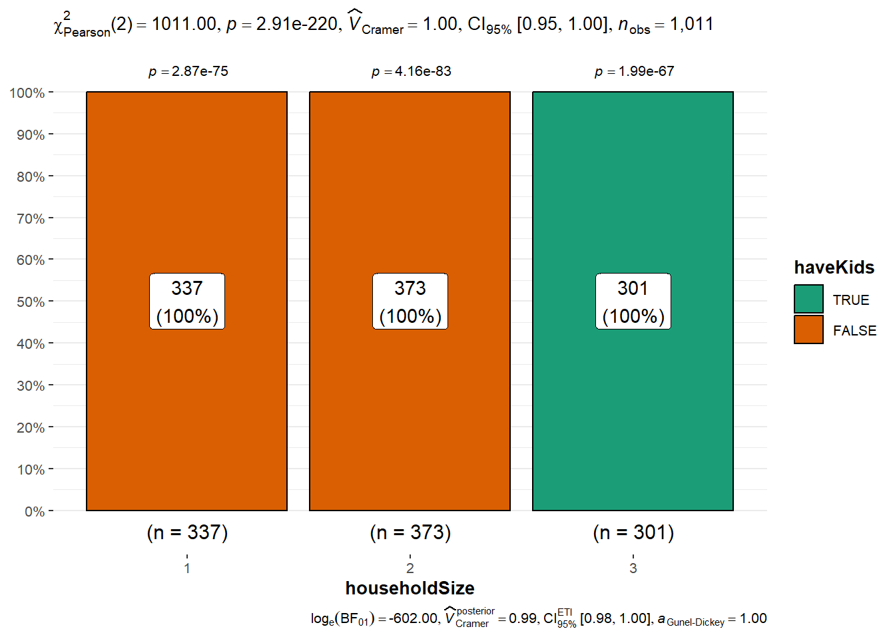
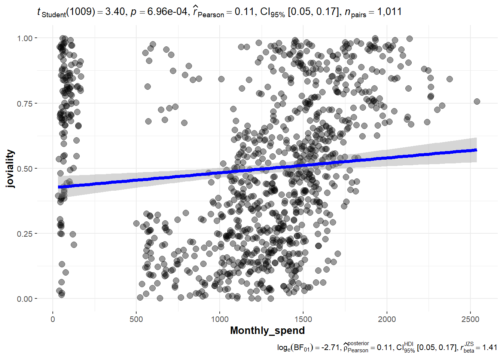

pacman::p_load(plotly, ggstatsplot, knitr, patchwork, ggdist, ggthemes, tidyverse)Take-home Exercise 1
Overview
A sample survey of representative residents of City of Engagement located at Country of Nowhere was conducted to collect data related to demographic and spending patterns. This data will be used to assist in community revitalization efforts, including how to allocate city renewal grant.
The objective is to use appropriate static and interactive statistical graphics methods to provide an user-friendly and interactive solution that helps city managers and planners to explore the complex data in an engaging way and reveal hidden patterns.
Dataset
Two datasets are provided:
Participants.csv: provides demographic information about the residents
FinancialJournal.csv: contain information about financial transactions for different expense categories
Data Preparation
Install and load packages
Import and view datasets
Load demographic data and data summary statistics
demo_info<-read_csv("data/Participants.csv")
summary(demo_info) participantId householdSize haveKids age
Min. : 0.0 Min. :1.000 Mode :logical Min. :18.00
1st Qu.: 252.5 1st Qu.:1.000 FALSE:710 1st Qu.:29.00
Median : 505.0 Median :2.000 TRUE :301 Median :39.00
Mean : 505.0 Mean :1.964 Mean :39.07
3rd Qu.: 757.5 3rd Qu.:3.000 3rd Qu.:50.00
Max. :1010.0 Max. :3.000 Max. :60.00
educationLevel interestGroup joviality
Length:1011 Length:1011 Min. :0.000204
Class :character Class :character 1st Qu.:0.240074
Mode :character Mode :character Median :0.477539
Mean :0.493794
3rd Qu.:0.746819
Max. :0.999234 View all columns and data type for each column
glimpse(demo_info)Rows: 1,011
Columns: 7
$ participantId <dbl> 0, 1, 2, 3, 4, 5, 6, 7, 8, 9, 10, 11, 12, 13, 14, 15, 1…
$ householdSize <dbl> 3, 3, 3, 3, 3, 3, 3, 3, 3, 3, 3, 3, 3, 3, 3, 3, 3, 3, 3…
$ haveKids <lgl> TRUE, TRUE, TRUE, TRUE, TRUE, TRUE, TRUE, TRUE, TRUE, T…
$ age <dbl> 36, 25, 35, 21, 43, 32, 26, 27, 20, 35, 48, 27, 34, 18,…
$ educationLevel <chr> "HighSchoolOrCollege", "HighSchoolOrCollege", "HighScho…
$ interestGroup <chr> "H", "B", "A", "I", "H", "D", "I", "A", "G", "D", "D", …
$ joviality <dbl> 0.001626703, 0.328086500, 0.393469590, 0.138063446, 0.8…is.na() function is also used to confirm that there are no missing values in the demo_info dataset.
#Check for mising values
any(is.na(demo_info))[1] FALSE# check unique values and their frequency for each column
demo_info# A tibble: 1,011 × 7
participantId householdSize haveKids age educationLevel interestGroup
<dbl> <dbl> <lgl> <dbl> <chr> <chr>
1 0 3 TRUE 36 HighSchoolOrCollege H
2 1 3 TRUE 25 HighSchoolOrCollege B
3 2 3 TRUE 35 HighSchoolOrCollege A
4 3 3 TRUE 21 HighSchoolOrCollege I
5 4 3 TRUE 43 Bachelors H
6 5 3 TRUE 32 HighSchoolOrCollege D
7 6 3 TRUE 26 HighSchoolOrCollege I
8 7 3 TRUE 27 Bachelors A
9 8 3 TRUE 20 Bachelors G
10 9 3 TRUE 35 Bachelors D
# ℹ 1,001 more rows
# ℹ 1 more variable: joviality <dbl>Load financial transaction data and check summary statistics
transactions<-read_csv("data/FinancialJournal.csv")
summary(transactions) participantId timestamp category
Min. : 0.0 Min. :2022-03-01 00:00:00.00 Length:1513636
1st Qu.: 222.0 1st Qu.:2022-05-24 13:25:00.00 Class :character
Median : 464.0 Median :2022-08-25 15:00:00.00 Mode :character
Mean : 480.9 Mean :2022-08-26 05:00:48.42
3rd Qu.: 726.0 3rd Qu.:2022-11-27 07:25:00.00
Max. :1010.0 Max. :2023-02-28 23:55:00.00
amount
Min. :-1562.726
1st Qu.: -5.594
Median : -4.000
Mean : 20.047
3rd Qu.: 21.598
Max. : 4096.526 View all columns and data type for each column
glimpse(transactions)Rows: 1,513,636
Columns: 4
$ participantId <dbl> 0, 0, 0, 1, 1, 1, 2, 2, 2, 3, 3, 3, 4, 4, 4, 5, 5, 5, 6,…
$ timestamp <dttm> 2022-03-01, 2022-03-01, 2022-03-01, 2022-03-01, 2022-03…
$ category <chr> "Wage", "Shelter", "Education", "Wage", "Shelter", "Educ…
$ amount <dbl> 2472.50756, -554.98862, -38.00538, 2046.56221, -554.9886…Check for missing values
any(is.na(transactions))[1] FALSEData Cleaning and Wrangling
Looking at the data summary, we notice a few problems:
Wrong data type
Data type is character for nominal data (participantId), categorical data (interestGroup in demo_info and category in transactions) and ordinal data (educationLevel in demo_info). We need to use as.factor() to convert these attributes to the correct data type. We also need to add order to the educationLevel.
Also the data type is wrong for householdSize in demo_info, we used as.integer() to convert householdSize to discrete data.
# Nominal and Categorical data
demo_info$participantId<-as.factor(demo_info$participantId)
transactions$participantId<-as.factor(transactions$participantId)
demo_info$educationLevel<-as.factor(demo_info$educationLevel)
demo_info$interestGroup<- as.factor(demo_info$interestGroup)
transactions$category<-as.factor(transactions$category)
# Check categories in educationLevel using levels()
levels(demo_info$educationLevel)[1] "Bachelors" "Graduate" "HighSchoolOrCollege"
[4] "Low" # Assign orders to ordinal data educationLevel
demo_info$educationLevel<-factor((demo_info$educationLevel),
levels=c("Low","HighSchoolOrCollege", "Bachelors", "Graduate"))
# Discrete data
demo_info$householdSize<-as.integer(demo_info$householdSize)Duplicated Data
Duplicated data is detected by select rows with duplicate data for financial journal. Since at each timestamp there can only be one single transaction of the same category and amount, the duplicate data should be excluded from analysis.
#check for duplicates; find all rows with the same values for all columns
transactions[duplicated(transactions),]# A tibble: 1,113 × 4
participantId timestamp category amount
<fct> <dttm> <fct> <dbl>
1 0 2022-03-01 00:00:00 Shelter -555.
2 0 2022-03-01 00:00:00 Education -38.0
3 1 2022-03-01 00:00:00 Shelter -555.
4 1 2022-03-01 00:00:00 Education -38.0
5 2 2022-03-01 00:00:00 Shelter -557.
6 2 2022-03-01 00:00:00 Education -12.8
7 3 2022-03-01 00:00:00 Shelter -555.
8 3 2022-03-01 00:00:00 Education -38.0
9 4 2022-03-01 00:00:00 Shelter -1556.
10 4 2022-03-01 00:00:00 Education -12.8
# ℹ 1,103 more rowsIn total, 1113 rows of duplicate data were hidden and excluded from analysis. distinct() function is used to keep only unique/distinct rows from a data frame. If there are duplicate rows, only the first row is preserved.
#Remove duplicate rows
transactions<-transactions %>% distinct()
# Check that duplicates have been removed
transactions[duplicated(transactions),]# A tibble: 0 × 4
# ℹ 4 variables: participantId <fct>, timestamp <dttm>, category <fct>,
# amount <dbl>Convert negative transactions value to positive
transactions$amount <-abs(transactions$amount)Extract month from timestamp and get monthly expense data
Since wage and expenses such as shelter are paid monthly and there are only 12 months (3/2022 to 2/2023) in the dataset, only month data is needed from the timestamp column.
transactions <-transactions %>%
mutate(month=month(timestamp))
summary(transactions) participantId timestamp category
441 : 2599 Min. :2022-03-01 00:00:00.00 Education : 3018
239 : 2483 1st Qu.:2022-05-24 16:05:00.00 Food :790051
321 : 2483 Median :2022-08-25 16:20:00.00 Recreation :296013
654 : 2456 Mean :2022-08-26 08:09:38.58 RentAdjustment: 131
82 : 2430 3rd Qu.:2022-11-27 08:05:00.00 Shelter : 10651
164 : 2422 Max. :2023-02-28 23:55:00.00 Wage :412659
(Other):1497650
amount month
Min. : 0.535 Min. : 1.000
1st Qu.: 4.000 1st Qu.: 3.000
Median : 5.648 Median : 6.000
Mean : 39.943 Mean : 6.451
3rd Qu.: 31.704 3rd Qu.: 9.000
Max. :4096.526 Max. :12.000
# Use group by to get monthly expense by participantID, month and category
transactions<-transactions %>%
select(participantId,month,category,amount) %>%
group_by(participantId,month,category)%>%
summarize(monthly_amt=sum(amount))
transactions# A tibble: 44,524 × 4
# Groups: participantId, month [10,691]
participantId month category monthly_amt
<fct> <dbl> <fct> <dbl>
1 0 1 Education 38.0
2 0 1 Food 265.
3 0 1 Recreation 210.
4 0 1 Shelter 555.
5 0 1 Wage 9048.
6 0 2 Education 38.0
7 0 2 Food 239.
8 0 2 Recreation 320.
9 0 2 Shelter 555.
10 0 2 Wage 8226.
# ℹ 44,514 more rowsConvert transaction category to columns
# Put value 0 for missing values, rental adjustment category is not applicable for all participants
transactions_amt<-transactions %>%
pivot_wider(
names_from=category,
values_from=monthly_amt,
values_fill = 0)
transactions_amt# A tibble: 10,691 × 8
# Groups: participantId, month [10,691]
participantId month Education Food Recreation Shelter Wage RentAdjustment
<fct> <dbl> <dbl> <dbl> <dbl> <dbl> <dbl> <dbl>
1 0 1 38.0 265. 210. 555. 9048. 0
2 0 2 38.0 239. 320. 555. 8226. 0
3 0 3 38.0 268. 349. 555. 11932. 0
4 0 4 38.0 266. 219. 555. 8637. 0
5 0 5 38.0 265. 383. 555. 9048. 0
6 0 6 38.0 257. 466. 555. 9048. 0
7 0 7 38.0 270. 1070. 555. 8637. 0
8 0 8 38.0 262. 314. 555. 9459. 0
9 0 9 38.0 256. 295. 555. 9048. 0
10 0 10 38.0 267. 25.0 555. 8637. 0
# ℹ 10,681 more rowsGroup Shelter and Rental Adjustment as Rental expense
The actual rental expense should take into account the rental adjustment for an accurate presentation. Rental expense is calculated by the following formula: Rental expense=Shelter - RentAdjustment
We will also get the total spending from combining all expenses.
transactions_amt<-transactions_amt%>%
mutate(Rent=Shelter - RentAdjustment) %>%
mutate(Monthly_spend=sum(Education, Food, Recreation, Rent))
transactions_amt# A tibble: 10,691 × 10
# Groups: participantId, month [10,691]
participantId month Education Food Recreation Shelter Wage RentAdjustment
<fct> <dbl> <dbl> <dbl> <dbl> <dbl> <dbl> <dbl>
1 0 1 38.0 265. 210. 555. 9048. 0
2 0 2 38.0 239. 320. 555. 8226. 0
3 0 3 38.0 268. 349. 555. 11932. 0
4 0 4 38.0 266. 219. 555. 8637. 0
5 0 5 38.0 265. 383. 555. 9048. 0
6 0 6 38.0 257. 466. 555. 9048. 0
7 0 7 38.0 270. 1070. 555. 8637. 0
8 0 8 38.0 262. 314. 555. 9459. 0
9 0 9 38.0 256. 295. 555. 9048. 0
10 0 10 38.0 267. 25.0 555. 8637. 0
# ℹ 10,681 more rows
# ℹ 2 more variables: Rent <dbl>, Monthly_spend <dbl>Get median monthly spending and join tables
median_spend<-transactions_amt %>%
select(participantId,Education, Food, Recreation, Rent, Monthly_spend, Wage) %>%
group_by(participantId)%>%
summarize(Education=median(Education),
Food=median(Food),
Recreation=median(Recreation),
Wage=median(Wage),
Rent=median(Rent),
Monthly_spend=median(Monthly_spend))
median_spend# A tibble: 1,011 × 7
participantId Education Food Recreation Wage Rent Monthly_spend
<fct> <dbl> <dbl> <dbl> <dbl> <dbl> <dbl>
1 0 38.0 265. 334. 9048. 555. 1190.
2 1 38.0 263. 472. 7951. 555. 1333.
3 2 12.8 290. 343. 6968. 557. 1201.
4 3 38.0 287. 328. 6735. 555. 1197.
5 4 12.8 274. 448. 8732. 1002. 1731.
6 5 12.8 348. 418. 1760 600. 1383.
7 6 12.8 321. 658. 1790. 581. 1575.
8 7 12.8 512. 412. 5912. 1013. 1952.
9 8 12.8 499. 442. 3508. 1180. 2123.
10 9 91.1 288. 383. 12613. 558. 1319.
# ℹ 1,001 more rowsIn order to understand whether different demographics have difference in spending pattern or financial health, the two tables need to be combined using participantId as key.
combined<-left_join(demo_info, median_spend, by ="participantId")
combined# A tibble: 1,011 × 13
participantId householdSize haveKids age educationLevel interestGroup
<fct> <int> <lgl> <dbl> <fct> <fct>
1 0 3 TRUE 36 HighSchoolOrCollege H
2 1 3 TRUE 25 HighSchoolOrCollege B
3 2 3 TRUE 35 HighSchoolOrCollege A
4 3 3 TRUE 21 HighSchoolOrCollege I
5 4 3 TRUE 43 Bachelors H
6 5 3 TRUE 32 HighSchoolOrCollege D
7 6 3 TRUE 26 HighSchoolOrCollege I
8 7 3 TRUE 27 Bachelors A
9 8 3 TRUE 20 Bachelors G
10 9 3 TRUE 35 Bachelors D
# ℹ 1,001 more rows
# ℹ 7 more variables: joviality <dbl>, Education <dbl>, Food <dbl>,
# Recreation <dbl>, Wage <dbl>, Rent <dbl>, Monthly_spend <dbl>Data Visualization
Demographics of town
Distribution of each attributes: Age, Household Size, Interest Group, Children status and education level
# Distribution of Children Status
p1<-demo_info %>%
count(haveKids=factor(haveKids)) %>%
mutate(pct=prop.table(n)) %>%
ggplot(aes(x = haveKids, y=n)) +
geom_col()+
geom_text(aes(x=haveKids, y= n,
label=paste0(n,"\n(", round(pct*100,1),"%)"),
vjust=-0.5))+
ggtitle("Distribution of Children Status")+
theme_minimal()+
xlab("Children Status")+
ylab("Count")+
ylim(c(0,800))
# Distribution of Education levels
p2<-demo_info %>%
count(educationLevel) %>%
mutate(pct=prop.table(n)) %>%
arrange(factor(educationLevel)) %>%
ggplot(aes(x = reorder(educationLevel, -n), y=n)) +
geom_col()+
geom_text(aes(x=educationLevel, y= n,
label=paste0(n,"\n(", round(pct*100,1),"%)"),
vjust=-0.5))+
ggtitle("Distribution of Education Levels")+
theme_minimal()+
xlab("Education Levels")+
ylab("Count")+
ylim(c(0,600))+
theme(axis.text.x = element_text(angle=20))
# Distribution of Interest Groups
p3<-demo_info %>%
count(interestGroup) %>%
mutate(pct=prop.table(n)) %>%
arrange(factor(interestGroup)) %>%
ggplot(aes(x = reorder(interestGroup, -n), y=n)) +
geom_col()+
geom_text(aes(x=interestGroup, y= n,
label=paste0(n,"\n(", round(pct*100,1),"%)"),
vjust=-0.5))+
ggtitle("Distribution of Interest Groups")+
theme_minimal()+
xlab("Interest Groups")+
ylab("Count")+
ylim(c(0,200))
# Distribution of householdSize
p4<-demo_info %>%
count(householdSize) %>%
mutate(pct=prop.table(n)) %>%
arrange(factor(householdSize)) %>%
ggplot(aes(x = reorder(householdSize, -n), y=n)) +
geom_col()+
geom_text(aes(x=householdSize, y= n,
label=paste0(n,
"\n(",
round(pct*100,1),
"%)"),
vjust=-0.5))+
ggtitle("Distribution of Household Size")+
theme_minimal()+
xlab("Household Size")+
ylab("Count")+
ylim(c(0,500))
#Distribution of age
p5<-ggplot(data=demo_info,aes(x=age))+
geom_histogram(bins=20)+
labs(y="Count",
x="age")+
geom_vline(aes(xintercept=mean(age, na.rm=T)),
color="red",
linetype="dashed",
linewidth=1)+
geom_vline(aes(xintercept=median(age, na.rm=T)),
color="grey30",
linetype="dashed",
linewidth=1)+
ggtitle("Distribution of Age")+
theme_minimal()+
xlab("Age")+
ylab("Count")+
ylim(c(0,120)) p4
# Chi squared test for relationship between Children Status and Education Level
p6<-ggbarstats(demo_info,
x=haveKids,
y=educationLevel,
label="both"
)
# Chi squared test for relationship between Children Status and Interest Groups
p7<-ggbarstats(demo_info,
x=haveKids,
y=interestGroup,
label="both"
)
# Chi squared test for relationship between Education Level and Interest Group
p8<-ggbarstats(demo_info,
x=educationLevel,
y=interestGroup,
label="both"
)
# Chi squared test for relationship between Household Size and Education Levels
p9<-ggbarstats(demo_info,
x=householdSize,
y=educationLevel,
label="both"
)
# Chi squared test for relationship between Household Size and Interest Group
p10<-ggbarstats(demo_info,
x=householdSize,
y=interestGroup,
label="both"
)
# Chi squared test for relationship between Children Status and Household size
p11<-ggbarstats(demo_info,
x=haveKids,
y=householdSize,
label="both"
) #p6,p9, p10
p11
Financial Health
Joviality
ggscatterstats(
data = combined,
x = Monthly_spend,
y =joviality,
marginal = FALSE,
)